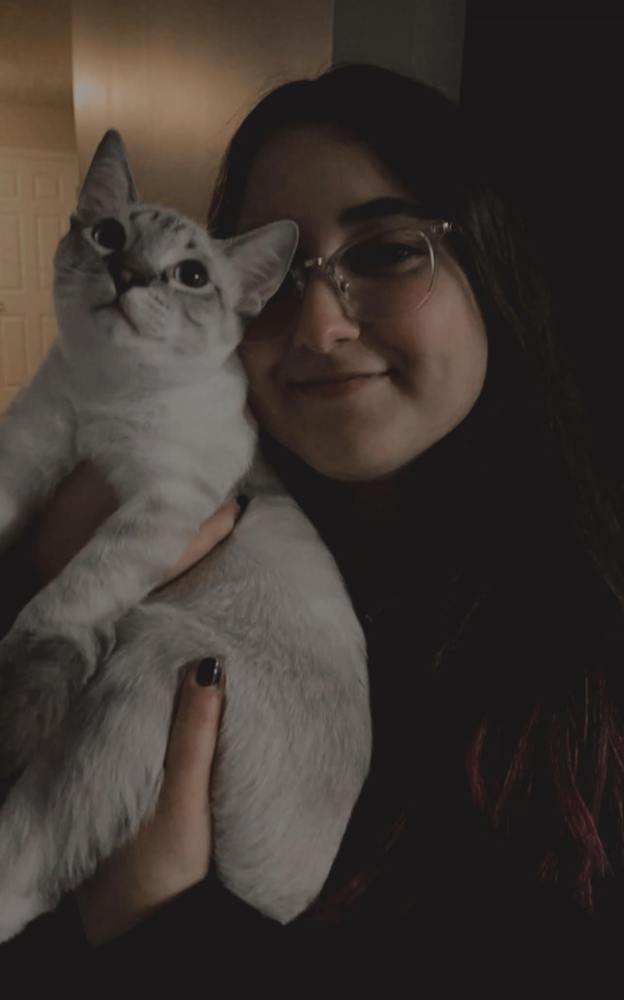

Hello! My name is Selin Kirbas. I am a 20 year old junior studying psychology. I am also pre-CIS which is why I am taking this course. Outside of school I am either at work assisting with research or spending my free time doing the things I love. I enjoy playing video games, reading books (especially fantasy), listening to music, and spending time with friends, family, or my cat. My cat's name is Ilker and he is a year old now.
| likes | dislikes |
|---|---|
| horror movies | hot and humid days |
| cats | bugs |
| fall season | heights |